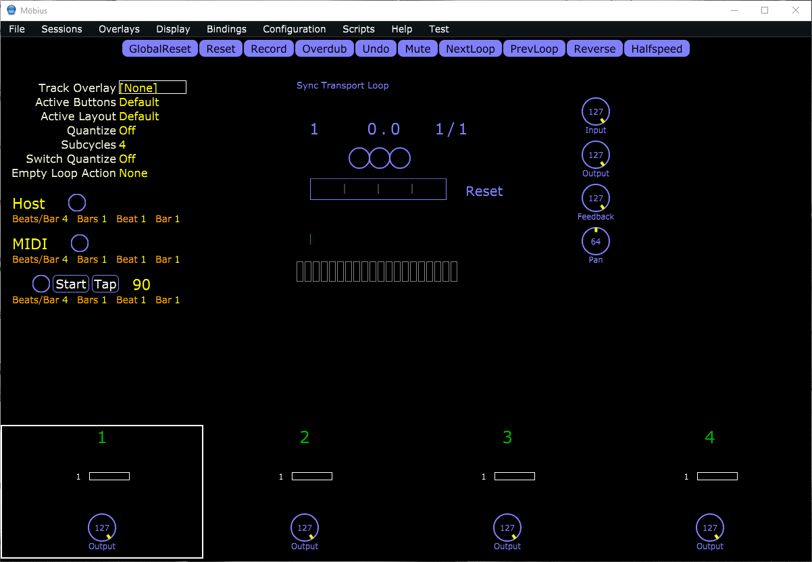
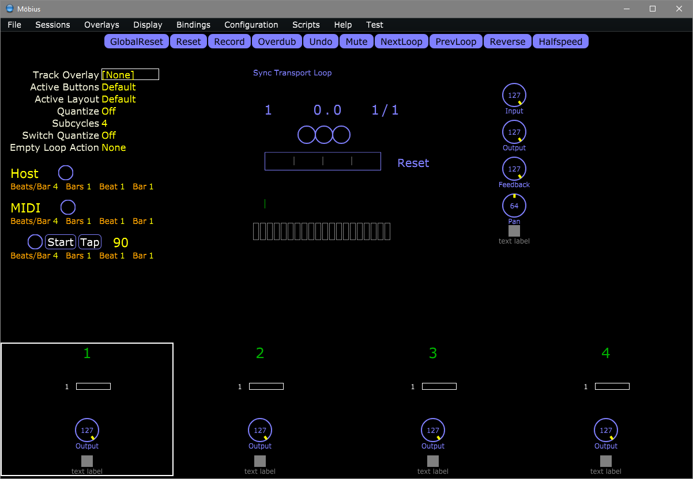
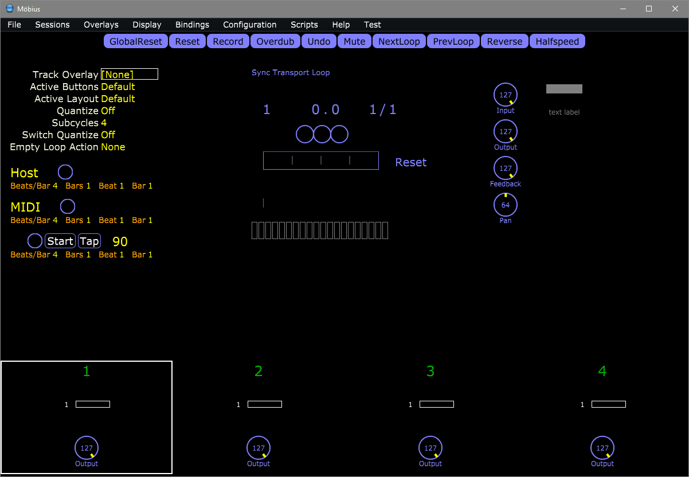

Background
To implement some “Looper X behaviour” in Möbius, my plan was to make some simplifying assumptions about how I would have Möbius set up. To make it as “Looper X” like as possible I decided to assume that Möbius was going to be used as a standalone app and would be pre-configured in the following way:
- 4 Audio Tracks (no MIDI tracks)
- 1 Loop per Track
- Track 1: Sync Source = Transport, Tracks 2-4: Sync Source = Track
- All Tracks: Sync Unit = Loop
- All Tracks: Track Sync Unit = Loop
- All Tracks: Quantize = Off
- All Tracks: Switch Quantize = Off
I’m also going to have added HostSync, MidiSync and Transport to the Main Elements display using Display > Edit Layouts..., going to the Main Elements tab and dragging them from the right to the left panel. I’ve then re-sized and re-positioned them as well as the Floating Track Strip as you can see in the image below:

Möbius Scripting
Because of the multi-functionality of the Looper X’s pedals, we will need to use one of Möbius’ scripting languages to create scripts that define how the individual pedals operate. There also needs to be a mechanism for keeping track of the current state of the emulation and displaying that information within the Möbius application window. Fortunately, the newer MSL scripting language has introduced the ability to create UI widgets. As only, MSL has this ability we will be creating MSL scripts.
UI Widget Scripting
At the time of writing, I am using Build 40 of Möbius. This build has a “Light” widget and a “Text” widget. The “Light” widget provides an on/off light in the form of a rectangular block which can be controlled to change colour depending on the state of a monitored variable whilst the “Text” widget replaces the rectangular block with a text label but it otherwise the same. We create these widgets using the ÌnstallUIElement`function in MSL using the syntax shown below.
InstallUIElement("nameforLightWidget", "nameOfMonitoredVariable" :Light :onColor :white :offColor :gray)
InstallUIElement("nameforTextWidget", "nameOfMonitoredVariable" :Text :text "text label" :width 80 :onColor :white :offColor :gray)- Both UI widgets assume that that the monitored variable has only two possible values.
- The text label for the text widget is fixed and must be given as a text string, you can’t use the name of a variable containing a text string.
- Many but not all of Juce’s colour names will be considered valid by the InstallUIElement function. (When a colour is not considered valid it is replaced by white.)
To define the widgets in a script to make them available we wrap them inside an initstatement and add export variable statements to make the monitoring variable available to any other scripts that might need it.
#name widgetLibraryName
#library
init{
InstallUIElement("nameforLightWidget", "nameOfMonitoredVariable" :Light :onColor :white :offColor :gray)
InstallUIElement("nameforTextWidget", "nameOfMonitoredVariable" :Text :text "text label" :width 80 :onColor :white :offColor :gray)
}
export variable nameOfMonitoredVariableUI Widget Installation
Adding the above as a script in Möbius makes the two widgets available to display. To make them appear you need to use Display > Edit Layouts... to add them to the application window. In Build 40, you only seem to be able to add the widgets to the Floating Track Strip or the Docked Track Strip using this method. In the figure below I’ve added them to both the Floating Track Strip and the Docked Track Strip.

Only being able to add the widgets to the Floating Track Strip or the Docked Track Strip is a serious limitation. However, there is a workaround if you are prepared to edit the uiconfig.xml file.
Go to Möbius’ Configuration Root folder (which you can find by selecting Help -> About) and after closing Möbius, open the uiconfig.xml file in a text editor.
Always make a back up copy of the uiconfig.xml file before attempting to edit it.
Don’t edit uiconfig.xml while Möbius is running. If you do, the changes you have made will be overwritten when you close Möbius.
<?xml version="1.0" encoding="UTF-8"?>
<UIConfig windowWidth="1200" windowHeight="800" activeButtonSet="Default"
activeLayout="Default">
<Layout name="Default">
<Element name="ModeElement" x="688" y="182"/>
<Element name="BeatersElement" x="514" y="132"/>
<Element name="LoopMeterElement" x="454" y="179"/>
<Element name="CounterElement" x="456" y="90"/>
<Element name="FloatingStripElement" x="845" y="44"/>
<Element name="ParametersElement" x="15" y="34"/>
<Element name="AudioMeterElement" x="456" y="259"/>
<Element name="LayerElement" x="436" y="288"/>
<Element name="AlertElement" x="365" y="431"/>
<Element name="MinorModesElement" x="437" y="57"/>
<Element name="TempoElement" x="438" y="31"/>
<Element name="LoopWindowElement" x="452" y="343"/>
<Element name="HostSync" x="15" y="200" width="290" height="50"/>
<Element name="MidiSync" x="15" y="260" width="290" height="50"/>
<Element name="Transport" x="15" y="320" width="290" height="50"/>
1 <Strip name="Docked">
<Element name="trackNumber"/>
<Element name="loopRadar"/>
<Element name="loopStack"/>
<Element name="output"/>
<Element name="outputMeter"/>
</Strip>
<Strip name="Floating">
<Element name="input"/>
<Element name="output"/>
<Element name="feedback"/>
<Element name="pan"/>
</Strip>
<InstantParameters names="trackOverlay,activeButtons,activeLayout,quantize,subcycles,switchQuantize,emptyLoopAction"/>
</Layout>
<ButtonSet name="Default">
<Button action="GlobalReset"/>
<Button action="Reset"/>
<Button action="Record"/>
<Button action="Overdub"/>
<Button action="Undo"/>
<Button action="Mute"/>
<Button action="NextLoop"/>
<Button action="PrevLoop"/>
<Button action="Reverse"/>
<Button action="Halfspeed"/>
</ButtonSet>
<Properties>
<Property name="mainWindow" value="0,0,1200,800"/>
<Property name="scriptWindow" value="20,40,400,800"/>
</Properties>
<ElementDefinition name="nameforLightWidget" visualizer="Light" area="strip,main">
<Properties>
<Property name="monitor" value="nameOfMonitoredVariable"/>
<Property name="offColor" value="gray"/>
<Property name="onColor" value="white"/>
</Properties>
</ElementDefinition>
<ElementDefinition name="nameforTextWidget" visualizer="Text" area="strip,main">
<Properties>
<Property name="monitor" value="nameOfMonitoredVariable"/>
<Property name="offColor" value="gray"/>
<Property name="onColor" value="white"/>
<Property name="text" value="text label"/>
<Property name="width" value="80"/>
</Properties>
</ElementDefinition>
</UIConfig>- 1
-
Insert the following text immediately above the
<Strip name="Docked">line and save theuiconfig.xmlfile.
<Element name="nameforLightWidget" x="925" y="60" width="67" height="20"/>
<Element name="nameforTextWidget" x="925" y="100" width="67" height="20"/>If you have done this correctly, when you open Möbius, you should see the Light Widget and the Text Widget to the right of the Floating Track Strip as below.

Now we have a mechanism for adding a Light or Text label to the main display of Möbius, we need to write further scripts to control the behaviour of the individual pedals.
Pedal Scripting
Pedal scripting is just a matter of writing separate scripts to control each of the pedals that make use of the global variables we have defined when setting up the UI widgets in the Widget Library script.